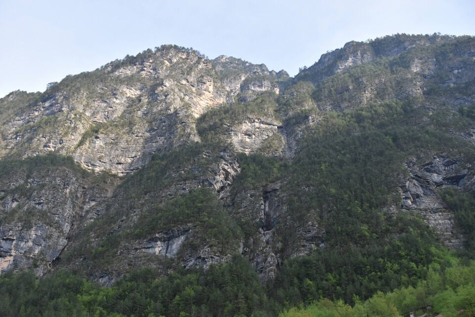
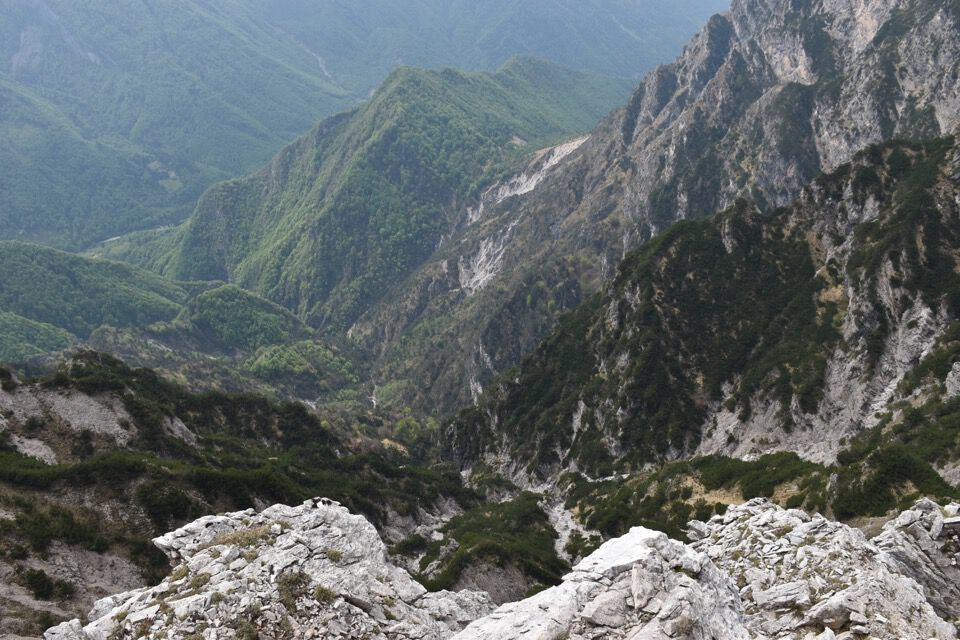

Si voleva fare una cosa breve (si aveva un impegno a Claut al pomeriggio) per cui abbiamo puntato alla Cima Ciolesàn dalla val Piovìn; improvvisando un po' abbiamo allungato raggiungendo pure la sommità de Pale de Ciuone: bell'anello, in «leggerezza», senza particolari difficoltà.
Bellissima la val Piovìn in primavera: certo che zero neve il tre di maggio a duemila metri a nord è strano!
In centro foto la più bassa delle cenge del versante sud del Turlón — Pale Candele: la thengia de Antrognolér al Col de Vitór.
Sempre pessima luce per questo scatto.
Dopo attente riflessioni abbiamo appurato che il Turlón è uomo e Pale Candele è donna.
Volti sofferenti: Spiz de val Piovìn.
La forcella q1924 fra val Piovìn e val Ciolesàn: di qua o di là? di qua o di là? di qua o di là?
Bon andiamo di là.
Andiamo su per il semplicissimo canalone orientale, e poi saliamo a casaccio a zig zag per placche e prati.
Dalla cima verso il ciadìn dai Landresbiancs.

Verso il Cornaget.
Verso Claut e forcella Thita.
Stalla Col de Mela: ah che bello!
Ci abbiamo messo proprio poco per arrivare in cima, non si può mica già tornare giù per la stessa strada. Tutt'un tratto un'idea folle si materializza in me: tento di convincere Luciana a scendere a Lesis per il ramo dx della val Ciolesàn — glissando su problemi logistici — ma la cosa (...per fortuna...) non mi riesce.
Allora tiro fuori dal cappello un'altra idea: andiamo sulle vicine Pale de Ciuone. Improvvisiamo!
Iniziamo a traversare lungo la facile e bella cresta.
Verso le Pale de Ciuone.
Il risalto insuperabile lungo la cresta ovest di cima Ciolesàn: l'aggiramento in versante sud è ovvio poiché obbligato (prima giù per un facile e largo canale ghiaioso e poi si traversa su tracce di camosci).
I mughi sotto la forcella q1924 hanno sconfitto la lama del mio seghetto: uffa!
Impressionate come sprofonda la val Ciolesàn! Epperò so come scendere.
Tagli vecchissimi lungo il tratto di mughi sotto forcella q1924.
A tu per tu con le Pale de Ciuone.
E ora su per l'ultimissima parte della via della val Ciolesàn, percorsa poco più di un mese addietro col Riccardo.
Dopo un po' di cresta ecco la cima principale delle Pale de Ciuone che avevamo già visitato ai primi di gennaio.
Polsadôr: e ora giù per il canalaccio in val Piovìn.
***